Același sfat, alt rezultat
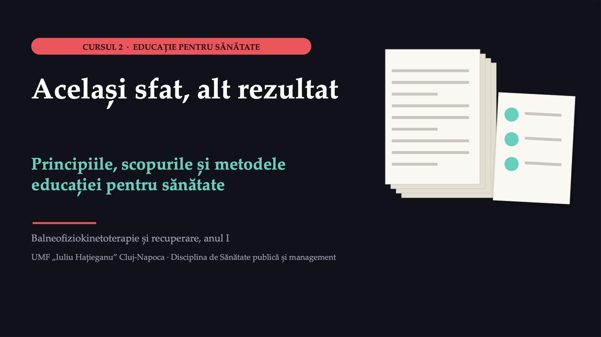
1 / 43Ce facem cu răspunsurile voastre
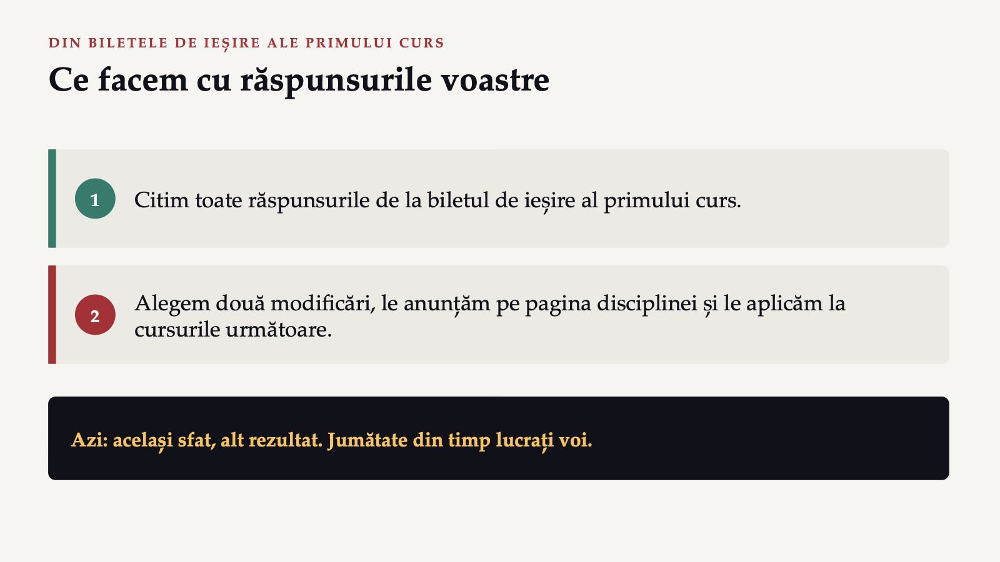
2 / 43Broșura de opt pagini
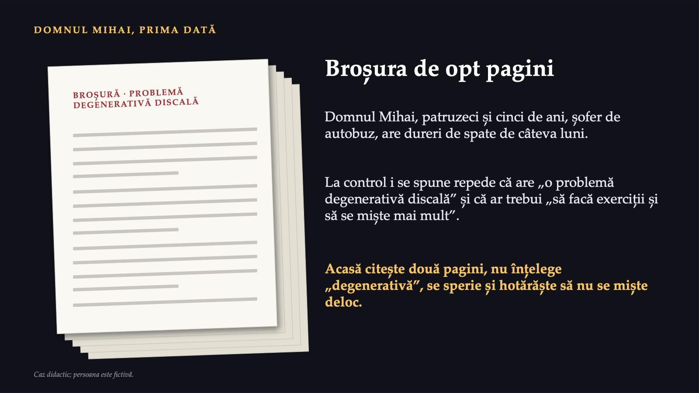
3 / 43Același lucru, spus altfel
 4 / 43
4 / 43De ce a urmat domnul Mihai sfatul a doua oară?
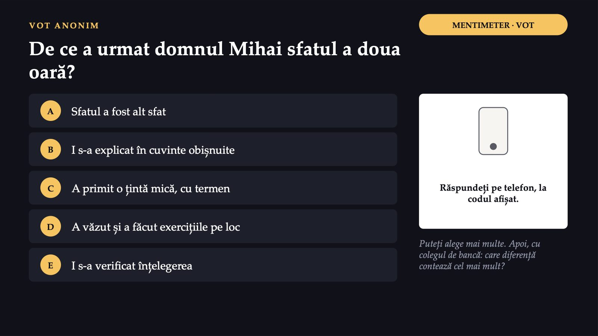
5 / 43De ce merge un sfat o dată și altă dată nu?
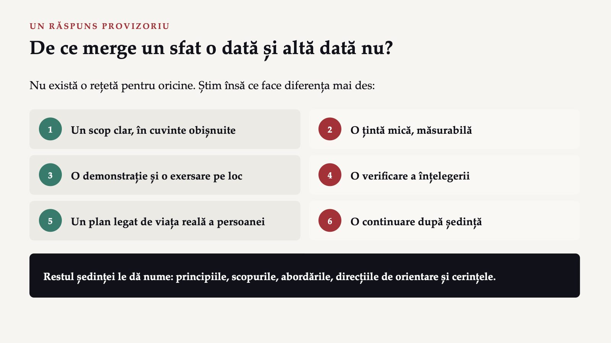
6 / 43Un copil de șase ani a căzut de pe bicicletă
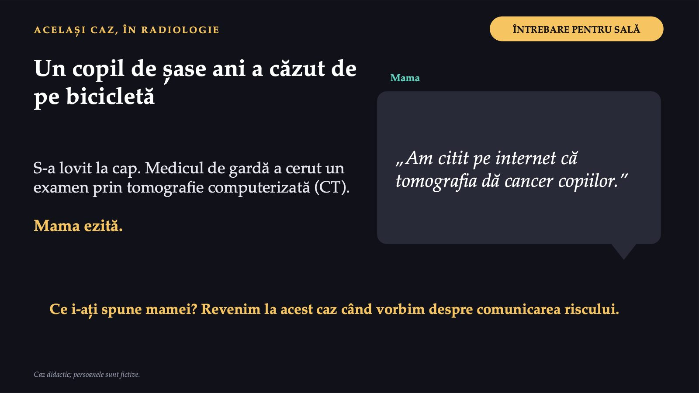
7 / 43Cinci scopuri, o singură direcție
 8 / 43
8 / 43În recuperare și în imagistică
![SCOPURILE În recuperare și în imagistică În recuperare îngrijirea de sine între ședințe exerciții făcute regulat prevenirea recăderii funcționare mai bună: urcă scările, merge la serviciu participarea socială În radiologie și imagistică înțelege de ce face investigația se pregătește după protocolul secției (analize, fără obiecte metalice) colaborează la examinare: stă nemișcat, ține respirația la comandă știe ce urmează Pentru OMS, recuperarea este o strategie de sănătate prioritară a secolului XXI. Educația pacientului face parte din recuperare de la început.](diapozitive/C02/009.jpg) 9 / 43
9 / 43Obiectivul măsurabil
![TERMENUL NOU 1 DIN 3 Obiectivul măsurabil O țintă la care, la o dată stabilită, oricine poate spune „da, s-a întâmplat” sau „nu, încă nu”. Ce anume se schimbă Cât La cine Până când Cum se măsoară Scopul arată direcția, obiectivul arată dacă ați ajuns. El descrie rezultatul la persoană, nu activitatea profesionistului. Fără el, educația rămâne o bună intenție. Varianta disciplinei: specific, măsurabil, realizabil, relevant, încadrat în timp (acronimul englezesc SMART). Alte surse dau alte sensuri unor litere.](diapozitive/C02/010.jpg) 10 / 43
10 / 43De la scop vag la obiectiv măsurabil
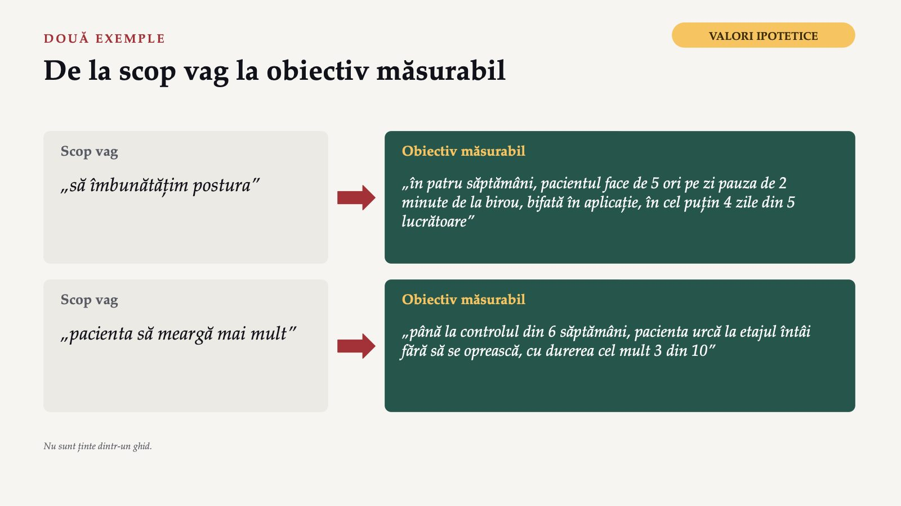
11 / 43Rescrieți scopul ca obiectiv măsurabil
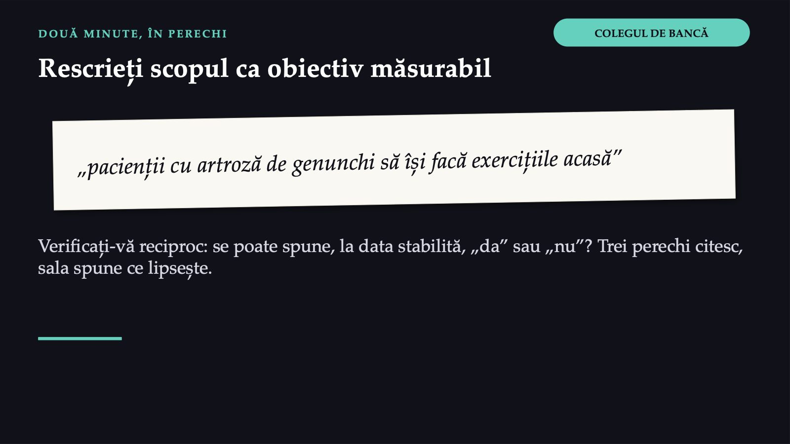
12 / 43Patru consecințe practice
![PRINCIPII · ADULȚII Patru consecințe practice 1 Spuneți de ce: „Exercițiile vă ajută să urcați scările, exact ce v-ați dorit.” 2 Porniți de la experiența persoanei: „Ce ați mai încercat? Ce a mers?” 3 Lucrați pe probleme reale: ridicatul de pe scaun, urcatul în autobuz. 4 Construiți planul împreună: persoana alege ora și locul. Malcolm Knowles Adulții se deosebesc de copii prin experiență, motivație, orientare și nevoia de a învăța. Termenul „andragogie” e criticat: unele principii se aplică și copiilor.](diapozitive/C02/013.jpg) 13 / 43
13 / 4320
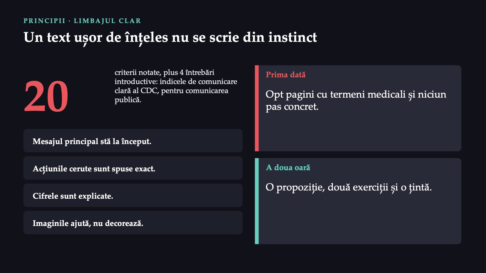
14 / 43150–300
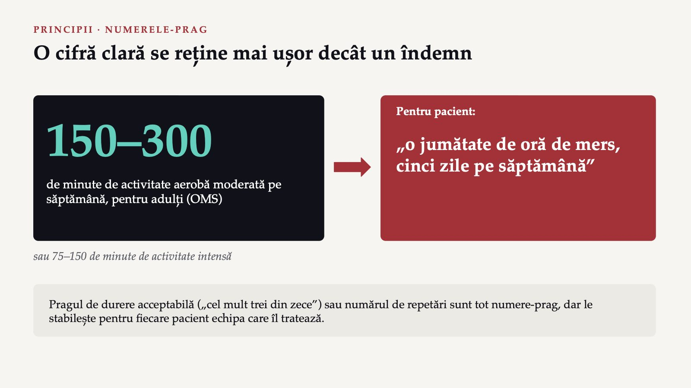
15 / 431,3 miliarde
![ECHITATEA 1,3 miliarde de oameni trăiesc cu o dizabilitate semnificativă: 16% din populația lumii, unul din șase. Un material bun înseamnă litere mari, contrast puternic subtitrări la clipuri o sală accesibilă cu cadru de mers explicații adaptate Pentru cine vorbește altă limbă: interpret profesionist, nu un membru al familiei, care traduce incomplet, pierde confidențialitatea și poate filtra. Adaptarea culturală nu înseamnă doar traducere: exemple din viața oamenilor, orare potrivite, materiale testate înainte de tipărire. OMS, fișa „Disability”, 2023.](diapozitive/C02/016.jpg) 16 / 43
16 / 43Cui vă adresați
 17 / 43
17 / 43Educația singură nu ajunge
![PROMOVAREA SĂNĂTĂȚII Educația singură nu ajunge Politici publice favorabile sănătății Medii care sprijină sănătatea Acțiunea comunitară Dezvoltarea deprinderilor personale ← educația Reorientarea serviciilor de sănătate Carta de la Ottawa, 1986: cinci domenii de acțiune. Educația este unul (deprinderile personale), nu înlocuiește celelalte patru. Domnul Mihai învață să meargă seara, dar pe drum neluminat, fără trotuar, ținta e mult mai greu de atins. Școala pauze active Locul de muncă pauze și trasee de mers Orașul bănci și iluminat bun](diapozitive/C02/018.jpg) 18 / 43
18 / 43Fișa cere „direcții de orientare”: sunt patru
![DIRECȚIILE DE ORIENTARE Fișa cere „direcții de orientare”: sunt patru 1 Comunicarea riscului și implicarea comunității Ce știm, ce nu știm încă, ce facem acum. 2 Educația digitală, datele și accesibilitatea Datele despre sănătate; conținut accesibil. 3 Informațiile false Infodemia, verificarea, corectarea unui mit. 4 Direcțiile integrate Același mesaj în cabinet, școală, la locul de muncă, spații publice, aplicații. Sursele oficiale nu au o listă unică a direcțiilor; materialele disciplinei le grupează în patru.](diapozitive/C02/019.jpg) 19 / 43
19 / 43Valul de căldură și exercițiile din parc
![COMUNICAREA RISCULUI VALORI IPOTETICE Valul de căldură și exercițiile din parc Ce știm „Căldura mare crește riscul de deshidratare și de rău la efort.” Ce nu știm „Prognoza se poate schimba; revenim cu un mesaj în fiecare seară la 18.” Ce faceți acum „Exercițiile se mută între 7:30 și 10, durează 20 de minute, cu pauză și apă la fiecare 10 minute. Opriți-vă dacă amețiți sau vă e greață.” Transparență, același mesaj pe toate canalele, incertitudinea recunoscută deschis. Ascultați întrebările oamenilor.](diapozitive/C02/020.jpg) 20 / 43
20 / 4310 000
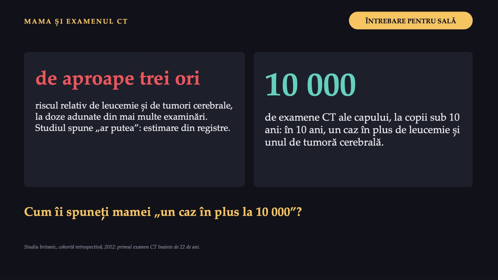
21 / 43Riscul există, este mic, iar echipa îl ține cât mai mic
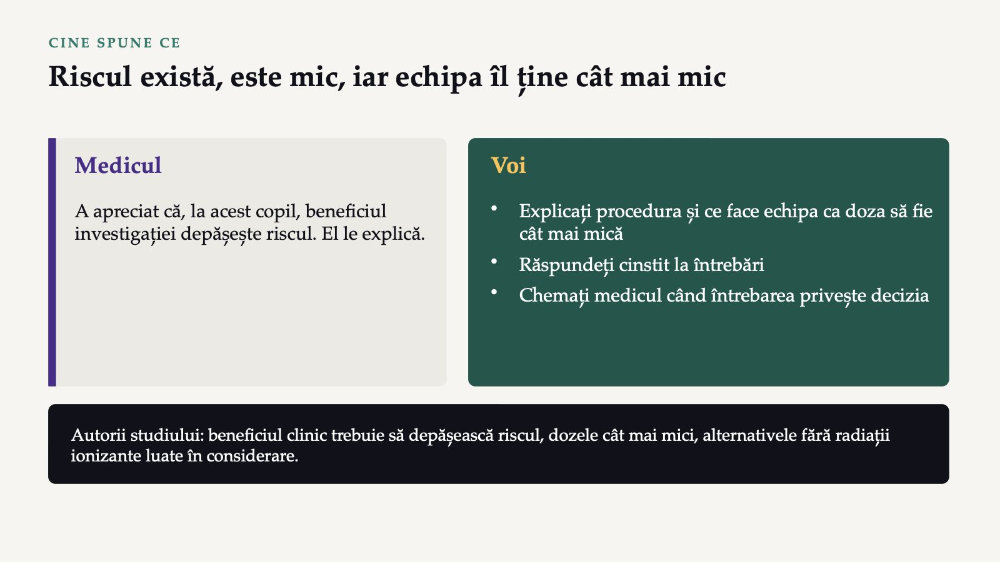
22 / 43Ce cereți, cum trimiteți, cum se citește
![DATELE Ce cereți, cum trimiteți, cum se citește REGULAMENTUL (UE) 2016/679 Art. 9 alin. (1): „se interzice prelucrarea” datelor „privind sănătatea”, cu excepțiile de la alin. (2). Art. 5 alin. (1) lit. (c): datele trebuie să fie „adecvate, relevante și limitate la ceea ce este necesar”. Cereți numai ce vă trebuie pentru progres. WCAG 2.1: conținut perceptibil operabil ușor de înțeles robust subtitrări la clipuri contrast bun text mărit butoane fără mouse Un rezultat trimis pe mesageria personală poate încălca aceste reguli.](diapozitive/C02/023.jpg) 23 / 43
23 / 43Infodemia
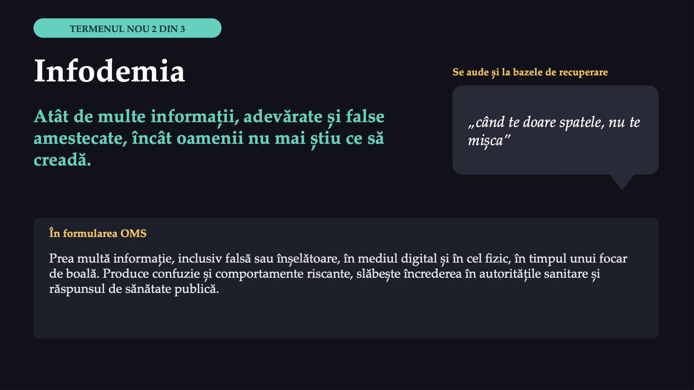
24 / 43Înainte să credeți sau să distribuiți
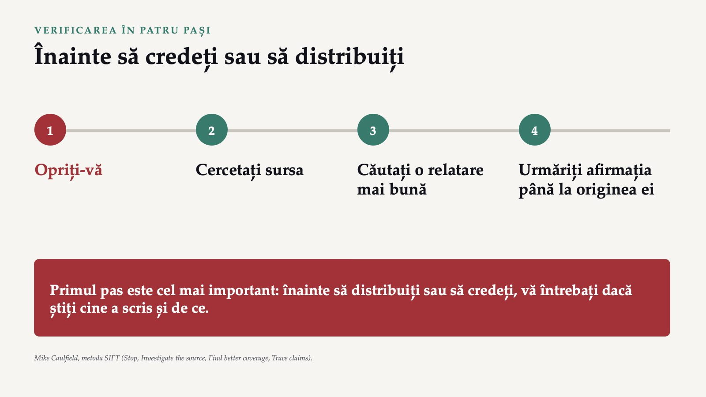
25 / 43Adevăr, mit, adevăr
![CORECTAREA UNUI MIT Adevăr, mit, adevăr 1 Adevărul întâi Pentru durerea de spate obișnuită, exercițiile pentru reluarea mișcării fac parte din tratament. 2 Mitul, scurt, numit fals Circulă ideea că e mai sigur să nu vă mișcați când vă doare spatele; recomandările OMS spun contrariul. 3 Din nou adevărul Astăzi învățați două exerciții și cum creșteți treptat efortul. Mitul nu se repetă mai des decât adevărul. Model: fișa OMS despre durerea de spate. În perechi, un minut: corectați mitul „orice radiografie e periculoasă”.](diapozitive/C02/026.jpg) 26 / 43
26 / 43Radiațiile tomografului pot dăuna copiilor
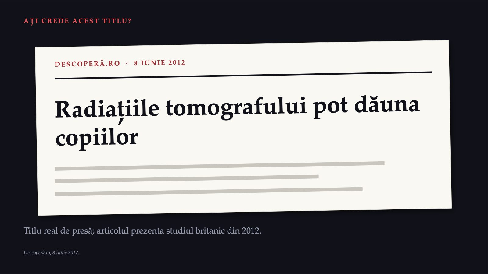
27 / 43Mama față de echipa de radiologie
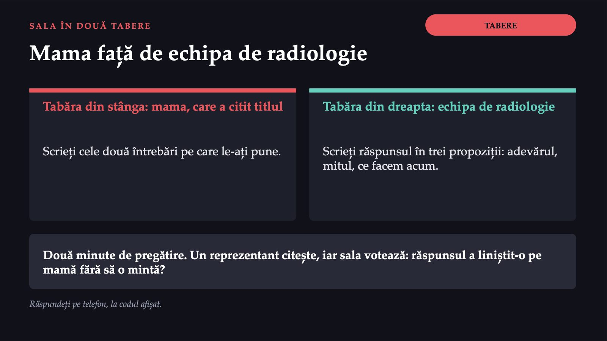
28 / 43Titlul nu este fals. Ce lipsește din el?
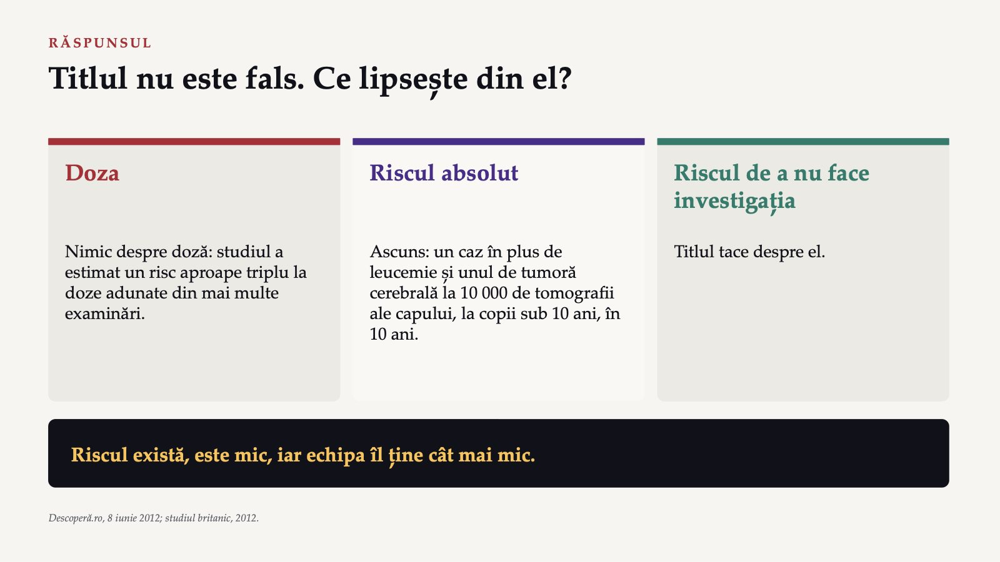
29 / 43Cinci cerințe și cum le măsurați
![VOT PE TELEFON Cinci cerințe și cum le măsurați Claritatea mesajului O idee, în cuvinte obișnuite. Coerența între canale Același mesaj peste tot. Accesul pentru toți Locul, ora, costul, limba, dizabilitatea nu exclud. Continuitatea în timp Memento, revenire, plan de întreținere. Măsurarea și îmbunătățirea Un indicator simplu, regulat. Structura ce aveți: oameni, sală, fișe clare Procesul ce faceți: ședințe cu verificare Rezultatul ce s-a schimbat: zilele cu exerciții, durerea Vot: ce cerință lipsea din „nu vă faceți griji”? Înainte de orice sfat: scopul, obiectivul măsurabil, cum veți ști.](diapozitive/C02/030.jpg) 30 / 43
30 / 43Pauză
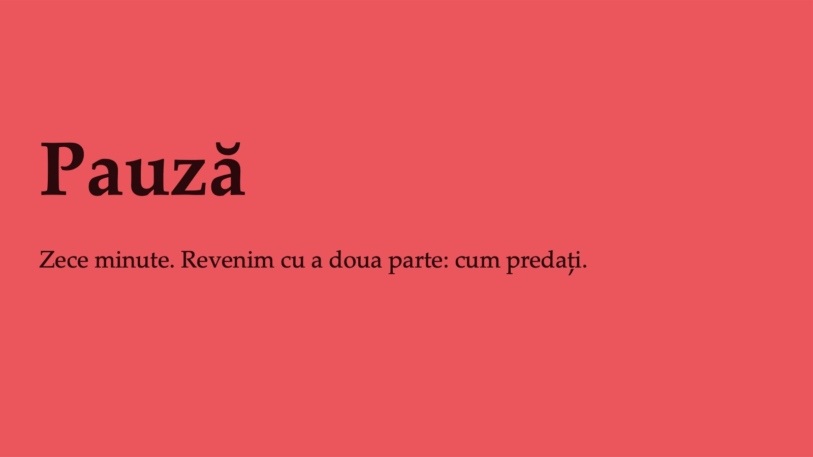
31 / 43Metoda și mijlocul
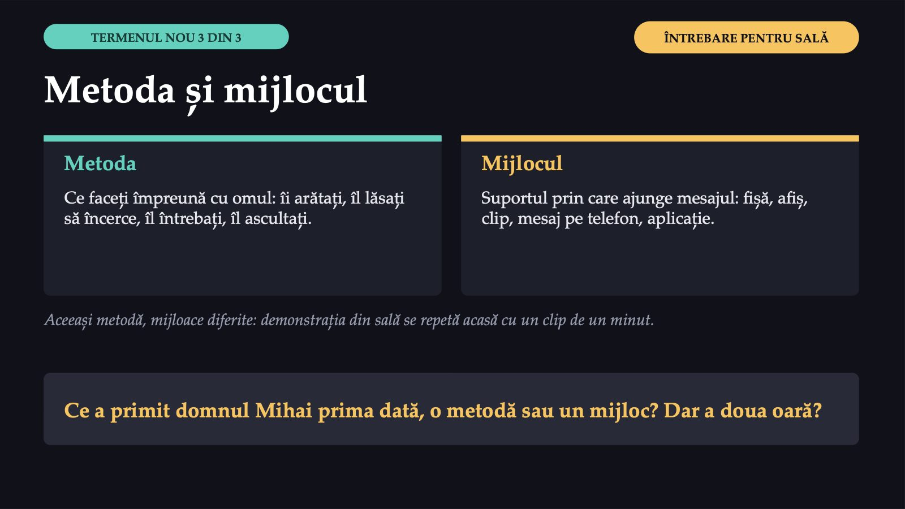
32 / 43Feedbackul tot mai rar, ca să se corecteze singur
![VOLUNTAR LA TABLĂ ÎNVĂȚAREA UNEI MIȘCĂRI Feedbackul tot mai rar, ca să se corecteze singur Despre execuție „Genunchiul rămâne în linie cu degetele.” Despre rezultat „Ați făcut zece ridicări fără pauză.” Studiu clasic din 1990: informația despre rezultat, dată mai rar, a îmbunătățit învățarea deprinderilor motorii. Corectați des la început, apoi tot mai rar: acasă nu sunteți lângă persoană. La început, același exercițiu repetat. După ce mișcarea e învățată, exercițiile se alternează, în situații diferite: pe scaunul de acasă, pe treapta de la bloc.](diapozitive/C02/033.jpg) 33 / 43
33 / 43Planul „dacă–atunci”
![FIECARE ÎȘI SCRIE PLANUL CONTRACTUL ȘI PLANUL VALORI IPOTETICE CONTRACT · DOMNUL MIHAI Când: zilnic, la 19:30. Ce: 2 serii de ridicări de pe scaun și 2 de urcat pe treaptă. Dacă durerea trece de 5 din 10: fac jumătate. Revedere: peste 10 zile, testul ridicărilor în 30 de secunde. Planul „dacă–atunci” Moment și acțiune precise: mai ușor decât „o să încerc”. „Dacă ajung acasă înainte de ora șapte, merg până la parc.” Scrieți un plan „dacă–atunci” pentru săptămâna voastră. (Gollwitzer, 1999) Dozele reale le stabilește echipa curantă.](diapozitive/C02/034.jpg) 34 / 43
34 / 43Domnul Mihai, după trei zile de pauză
![CONVERSAȚIA MOTIVAȚIONALĂ Domnul Mihai, după trei zile de pauză „Trebuie să continuați” poate produce rezistență. Patru instrumente: Întrebarea deschisă „Ce v-a ajutat în cele unsprezece seri reușite?” Aprecierea efortului „Ați continuat să mergeți chiar și cu durere.” Reflectarea „Vă e teamă că vă faceți rău, dar vă doriți plimbările.” Rezumatul „Ați spus că reluați cu cinci minute, varianta ușoară. Am înțeles bine?” trei din patru studii cu efect semnificativ și relevant clinic (meta-analiză, 2005). Pregătirea poate explica diferențele după profesie: metoda se exersează.](diapozitive/C02/035.jpg) 35 / 43
35 / 43Domnul Mihai, după cele trei zile de pauză
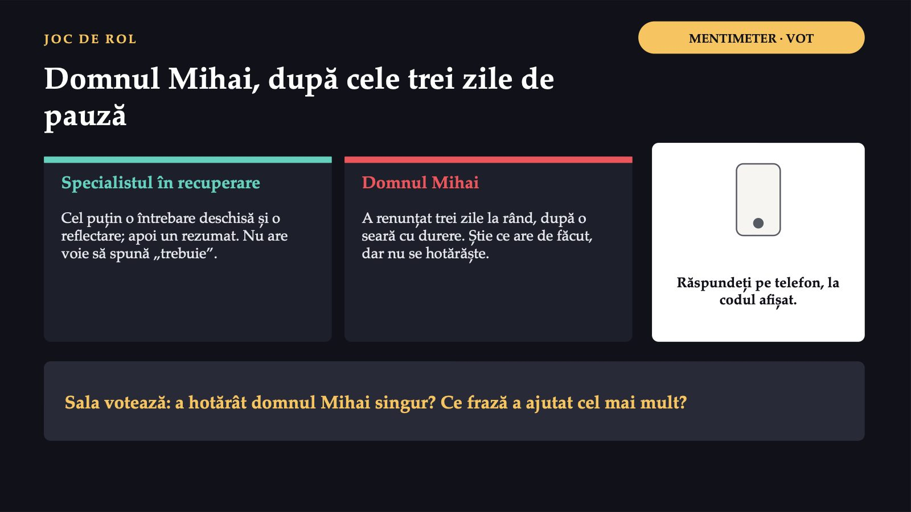
36 / 43Trei pași într-o consultație
![Trei pași într-o consultație 1 Întrebați „Fumați?” 2 Sfătuiți Clar, respectuos. 3 Oferiți o cale Un serviciu de renunțare, un medic, o revedere. Cochrane, 2013 42 de studii, peste 31 000 de fumători: sfatul scurt al medicului crește renunțarea la fumat, la cel puțin 6 luni. Cochrane, 2018 34 de studii, consum riscant sau nociv de alcool: după un an, în medie cu 20 de grame pe săptămână mai puțin. Dovezile vin mai ales de la medici; pentru specialiștii în recuperare, analizele nu spun dacă merge la fel.](diapozitive/C02/037.jpg) 37 / 43
37 / 43Fișa, afișul, mesajul: același nucleu, trei suporturi
![MIJLOACELE Fișa, afișul, mesajul: același nucleu, trei suporturi Fișa O pagină, cel mult trei mesaje-cheie, pași numerotați cu pictograme, litere mari. Afișul Un mesaj principal și, eventual, un cod QR spre un clip de un minut, cu subtitrare. Mesajul pe telefon Ora, locul, ținta și nimic în plus. Trei reguli de producție Testați înainte de a tipări Arătați fișa câtorva pacienți din grupul țintă. Păstrați hârtia ca bază Digitalul sprijină, nu înlocuiește. Același set de mesaje-cheie Pe toate suporturile, cu exemple locale.](diapozitive/C02/038.jpg) 38 / 43
38 / 43Ce mijloc de educație pentru sănătate v-a convins pe voi vreodată să schimbați ceva?
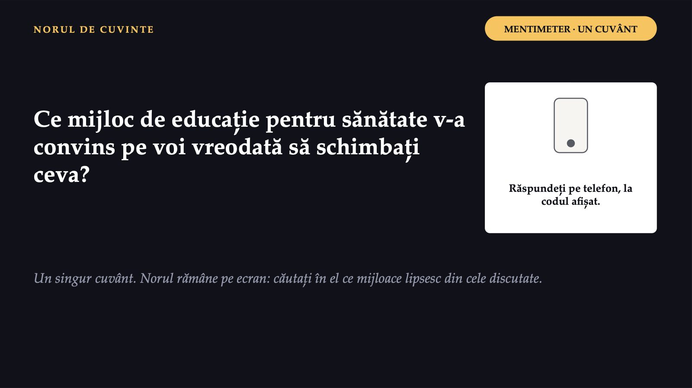
39 / 43Nu există metodă sau mijloc bun pentru toate situațiile
![COMBINAȚIA Nu există metodă sau mijloc bun pentru toate situațiile Pacient singur, cu teamă mare întâlnire individuală, demonstrație, conversație motivațională, fișă Grup cu aceeași problemă mini-ateliere cu demonstrație, colegi de sprijin, mesaje între ședințe Comunitate: depozit, școală, cartier instruire scurtă la fața locului, afișe, un „ambasador”, un clip intern Între ședințe mesaje, clipuri, hârtia ca rezervă Minutele educaționale: minute fixe la fiecare ședință, același nucleu (încălzire, creștere treptată, semne de oprire). Alegeți întâi metoda, apoi mijlocul: fișa fără demonstrație și verificare e un mijloc fără metodă.](diapozitive/C02/040.jpg) 40 / 43
40 / 43Cinci lucruri din ședință
![CE REȚINEȚI Cinci lucruri din ședință 1 Același sfat, alt rezultat Scop clar, cuvinte obișnuite, țintă mică și măsurabilă, demonstrație și verificare. 2 Scop și obiectiv Scopul devine util ca obiectiv măsurabil: ce, cât, până când, cum veți ști. 3 Adulții învață altfel Spuneți de ce, porniți de la experiența lor, lucrați pe probleme reale. 4 Informațiile false Verificați sursa în patru pași și corectați calm un mit. 5 Metodă și mijloc Metoda: ce faceți cu omul; mijlocul: suportul. Fără metodă, fișa nu ajunge.](diapozitive/C02/041.jpg) 41 / 43
41 / 43Scopuri, principii, direcții, metode: zece întrebări
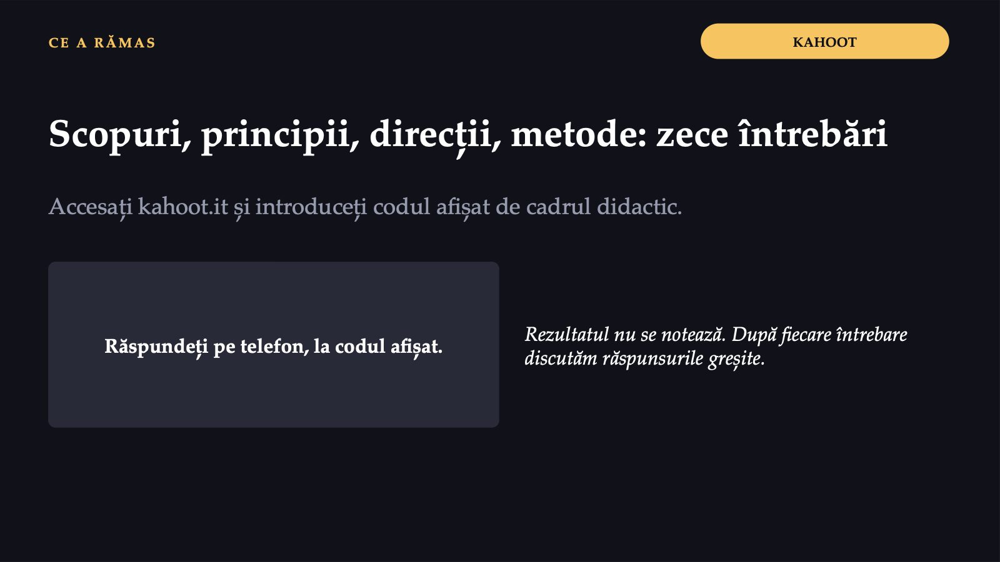
42 / 43Trei întrebări pentru final
 43 / 43
43 / 43Săgeți sau spațiu: navigare · O: vedere de ansamblu · N: notele prezentatorului · F: ecran complet · Esc: închidere